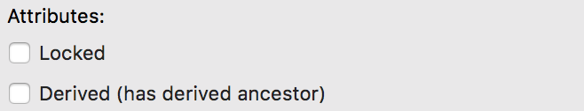
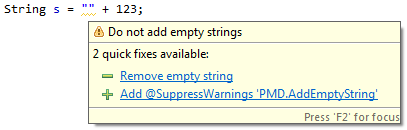
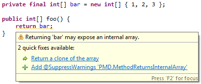
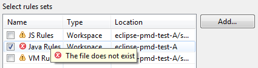
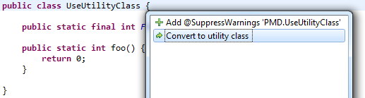
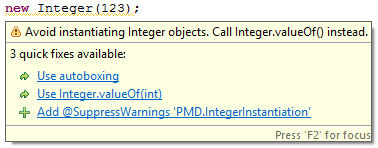
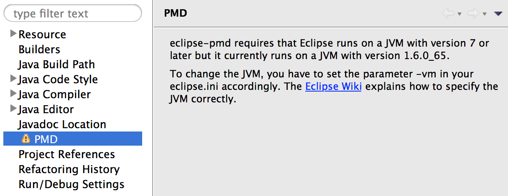
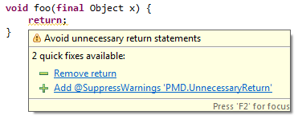

eclipse-pmd 1.25
Release: 2.12.2019
Eclipse repository: http://www.acanda.ch/eclipse-pmd/release/1.25
The embedded PMD has been updated to version 6.20.0 (except for the Scala rules which are still at version 6.17.0 due to an issue with a dependency).
eclipse-pmd 1.24
Release: 3.11.2019
Eclipse repository: http://www.acanda.ch/eclipse-pmd/release/1.24
The embedded PMD has been updated to version 6.19.0 (except for the Scala rules which are still at version 6.17.0 due to an issue with a dependency).
eclipse-pmd 1.23
Release: 7.10.2019
Eclipse repository: http://www.acanda.ch/eclipse-pmd/release/1.23
The embedded PMD has been updated to version 6.18.0 (except for the Scala rules which are still at version 6.17.0 due to an issue with a new dependency).
eclipse-pmd 1.22
Release: 4.9.2019
Eclipse repository: http://www.acanda.ch/eclipse-pmd/release/1.22
The embedded PMD has been updated to version 6.17.0.
eclipse-pmd 1.21
Release: 30.6.2019
Eclipse repository: http://www.acanda.ch/eclipse-pmd/release/1.21
The embedded PMD has been updated to version 6.16.0.
eclipse-pmd 1.20
Release: 26.5.2019
Eclipse repository: http://www.acanda.ch/eclipse-pmd/release/1.20
The embedded PMD has been updated to version 6.15.0.
eclipse-pmd 1.19
Release: 30.4.2019
Eclipse repository: http://www.acanda.ch/eclipse-pmd/release/1.19
The embedded PMD has been updated to version 6.14.0.
eclipse-pmd 1.18
Release: 31.3.2019
Eclipse repository: http://www.acanda.ch/eclipse-pmd/release/1.18
The embedded PMD has been updated to version 6.13.0.
eclipse-pmd 1.17
Release: 24.2.2019
Eclipse repository: http://www.acanda.ch/eclipse-pmd/release/1.17
The embedded PMD has been updated to version 6.12.0.
eclipse-pmd 1.16
Release: 2.12.2018
Eclipse repository: http://www.acanda.ch/eclipse-pmd/release/1.16
The embedded PMD has been updated to version 6.9.0.
eclipse-pmd 1.15
Release: 27.10.2018
Eclipse repository: http://www.acanda.ch/eclipse-pmd/release/1.15
The embedded PMD has been updated to version 6.8.0.
eclipse-pmd 1.14
Release: 4.8.2018
Eclipse repository: http://www.acanda.ch/eclipse-pmd/release/1.14
The embedded PMD has been updated to version 6.6.0.
eclipse-pmd 1.13
Release: 9.6.2018
Eclipse repository: http://www.acanda.ch/eclipse-pmd/release/1.13
The embedded PMD has been updated to version 6.4.0.
eclipse-pmd 1.12
Release: 29.4.2018
Eclipse repository: http://www.acanda.ch/eclipse-pmd/release/1.12
The embedded PMD has been updated to version 6.3.0.
eclipse-pmd 1.11
Release: 2.4.2018
Eclipse repository: http://www.acanda.ch/eclipse-pmd/release/1.11
The embedded PMD has been updated to version 6.2.0.
eclipse-pmd 1.10
Release: 4.7.2017
Eclipse repository: http://www.acanda.ch/eclipse-pmd/release/1.10
The embedded PMD has been updated to version 5.8.1.
eclipse-pmd 1.9
Release: 29.5.2017
Eclipse repository: http://www.acanda.ch/eclipse-pmd/release/1.9
Until now eclipse-pmd did exclude files that were marked as derived but not files that had only one of its parent folders marked as derived but were not marked themselves. Now it is enough to mark a folder as derived and eclipse-pmd will exclude all of its files.
The embedded PMD has been updated to version 5.7.0.
eclipse-pmd 1.8
Release: 6.12.2015
Eclipse repository: http://www.acanda.ch/eclipse-pmd/release/1.8
The embedded PMD has been updated to version 5.4.1.
eclipse-pmd 1.7
Release: 1.11.2015
Eclipse repository: http://www.acanda.ch/eclipse-pmd/release/1.7
New quick fixes are available for the following rules: AddEmptyString, UseVarargs, UnnecessaryCaseChange.
The embedded PMD has been updated to version 5.4.0.
eclipse-pmd 1.6
Release: 26.7.2015
Eclipse repository: http://www.acanda.ch/eclipse-pmd/release/1.6
New quick fixes are available for the following rules: MethodReturnsInternalArray.
The embedded PMD has been updated to version 5.3.3.
eclipse-pmd 1.5
Release: 23.5.2015
Eclipse repository: http://www.acanda.ch/eclipse-pmd/release/1.5
Invalid rule sets are marked in the PMD property page with an icon.
New quick fixes are available for the following rules: UseUtilityClass.
The embedded PMD has been updated to version 5.3.2.
eclipse-pmd 1.4.1
Release: 19.3.2015
Eclipse repository: http://www.acanda.ch/eclipse-pmd/release/1.4
This release fixes a gnarly class loader bug in version 1.4 which sometimes prevents eclipse-pmd from running PMD with an error message like "Unknown Language 'java' for Rule JumbledIncrementer".
eclipse-pmd 1.4
Release: 21.12.2014
Eclipse repository: http://www.acanda.ch/eclipse-pmd/release/1.4
The embedded PMD has been updated to version 5.2.2.
eclipse-pmd 1.3
Release: 19.11.2014
Eclipse repository: http://www.acanda.ch/eclipse-pmd/release/1.3
The embedded PMD has been updated to version 5.2.1.
eclipse-pmd 1.2
Release: 2.9.2014
Eclipse repository: http://www.acanda.ch/eclipse-pmd/release/1.2
The embedded PMD has been updated to version 5.1.3.
eclipse-pmd 1.1.1
Release: 15.8.2014
Eclipse repository: http://www.acanda.ch/eclipse-pmd/release/1.1
This release fixes a bug in version 1.1 which prevents eclipse-pmd from executing the Java rules OneDeclarationPerLine and AvoidLiteralsInIfCondition.
eclipse-pmd 1.1
Release: 10.8.2014
Eclipse repository: http://www.acanda.ch/eclipse-pmd/release/1.1
New quick fixes are available for the following rules: IntegerInstantiation, ByteInstantiation, ShortInstantiation, LongInstantiation.
The embedded PMD has been updated to version 5.1.2.
eclipse-pmd 1.0.2
Release: 13.7.2014
Eclipse repository: http://www.acanda.ch/eclipse-pmd/release/1.0
This release fixes a bug in version 1.0.1 which prevents eclipse-pmd from analysing Apache Velocity templates.
eclipse-pmd 1.0.1
Release: 5.7.2014
Eclipse repository: http://www.acanda.ch/eclipse-pmd/release/1.0
This release fixes a bug in version 1.0.0 which prevents setting up a new workspace relative rule set configuration if the project containing the rule set file is stored outside the workspace folder.
eclipse-pmd 1.0
Release: 4.6.2014
Eclipse repository: http://www.acanda.ch/eclipse-pmd/release/1.0
The embedded PMD has been updated to version 5.1.1.
eclipse-pmd 0.9
Release: 1.3.2014
Eclipse repository: http://www.acanda.ch/eclipse-pmd/release/0.9
The embedded PMD has been updated to version 5.1.0
eclipse-pmd 0.8.1
Release: 8.2.2014
Eclipse repository: http://www.acanda.ch/eclipse-pmd/release/0.8
This release fixes a critical bug in version 0.8 which prevents the project property dialog from being opened when Eclipse runs on the early access version of Oracle's JDK 8.
eclipse-pmd 0.8
Release: 26.1.2014
Eclipse repository: http://www.acanda.ch/eclipse-pmd/release/0.8
The eclipse-pmd configuration is now stored in the file .eclipse-pmd in the root of each project. This makes it easy to share an eclipse-pmd configuration across a development team by putting it in version control with the rest of the code. When someone from the team changes the configuration an puts it in version control, eclipse-pmd will automatically apply the changes when the other team members fetch the updated configuration from version control.
eclipse-pmd stored the configuration in the workspace of your Eclipse installation up to version 0.8. eclipse-pmd will convert the configuration automatically after you use eclipse-pmd the first time after updating to version 0.8.

eclipse-pmd needs to run on a Java 7 VM. As Eclipse happily installs plug-ins that will not run due to their runtime requirements, eclipse-pmd now shows a message on the PMD property page explaining the situation and how to resolve it.
New quick fixes are available for the following rules: UselessOverridingMethodRule, UnnecessaryReturn.
eclipse-pmd 0.7
Release: 21.9.2013
Eclipse repository: http://www.acanda.ch/eclipse-pmd/release/0.7
New quick fixes are available for the following rules: AppendCharacterWithChar, UseIndexOfChar, StringToString.

The embedded PMD has been updated to version 5.0.5
eclipse-pmd 0.6
Release: 9.6.2013
Eclipse repository: http://www.acanda.ch/eclipse-pmd/release/0.6
eclipse-pmd supports PMD rule set configurations stored at a remote location. Use this type if you have a rule set configuration file that is only available via an URI.

eclipse-pmd 0.5
Release: 5.5.2013
Eclipse repository: http://www.acanda.ch/eclipse-pmd/release/0.5
The embedded PMD has been updated to version 5.0.4
eclipse-pmd 0.4
Release: 31.3.2013
Eclipse repository: http://www.acanda.ch/eclipse-pmd/release/0.4
This change adds preferences to configure style and colour of PMD annotations in text editors. The
General > Editors > Text Editors > Annotations
preference page lists the PMD Violations annotation and allows setting its preference values.

New quick fixes are available for the following rules: DefaultLabelNotLastInSwitchStmt, EqualsNull, UseNotifyAllInsteadOfNotify, UseCollectionIsEmpty, SingularField.

eclipse-pmd 0.3
Released: 2.3.2012
Eclipse repository: http://www.acanda.ch/eclipse-pmd/release/0.3
A new quick fix is available that adds a
@SuppressWarnings
annotation to suppress PMD warnings.

The embedded PMD has been updated to version 5.0.2
eclipse-pmd 0.2
Released: 29.1.2013
Eclipse repository: http://www.acanda.ch/eclipse-pmd/release/0.2
New quick fixes are available for the following rules: EmptyIfStmt, EmptyWhileStmt, EmptyTryBlock, EmptyFinallyBlock, EmptySwitchStatements, EmptySynchronizedBlock, EmptyInitializer, EmptyStatementBlock, EmptyStaticInitializer, EmptyStatementNotInLoop, RedundantFieldInitializer, SimplifyStartsWith.

The embedded PMD has been updated to version 5.0.1
eclipse-pmd 0.1
Released: 28.12.2012
Eclipse repository: http://www.acanda.ch/eclipse-pmd/release/0.1
eclipse-pmd provides quick fixes for a couple of PMD rules that can be fixed automatically. Quick fixes are available for the following rules: ExtendsObject, SuspiciousHashcodeMethodName, LocalVariableCouldBeFinal, MethodArgumentCouldBeFinal.

You can apply a quick fix to multiple violations of the same type at once if you use the context menu on a PMD problem in the Problems view and select the item "Quick Fix".

This feature lets you use multiple PMD ruleset configurations. Once a configuration is created it is available to all projects in the workspace and can be activated for each project individually.

Besides the PMD rule set configurations stored at an absolute path in the file system, eclipse-pmd also supports PMD rule set configurations stored relative to the workspace or project. The workspace type is used when you want to use the same PMD rule set configuration for several projects in the workspace. If you want to use a different PMD ruleset configuration for each project, you can use the project type. And as long as those PMD ruleset configurations are at the same place within the projects, you need to set up the configuration only once.

Besides Java, eclipse-pmd now also supports the additional languages that came with PMD 5.0. Supported are JavaScript, XML, XSL and JSP/JSF.